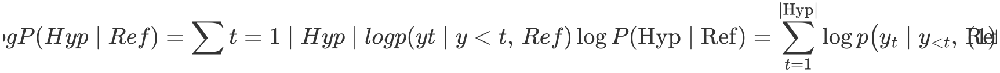
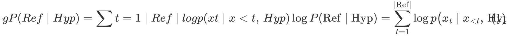

译文质量评价方法#
自动质量评估指标概述#
翻译质量评估是确保译文准确传达原文信息，同时保持目标语言流畅性和自然性的关键步骤。在机器翻译（MT）、软件本地化和人工翻译等场景中，合理运用评估指标可以帮助发现翻译过程中的优势与不足。研究者和实践者已经开发出多种自动化和人工评估方法，用于衡量译文的质量。
自动化指标（如BLEU、METEOR、TER等）主要通过统计方法评估机器翻译结果与人工参考译文之间的相似性，主要衡量词语重叠、语序一致性等特征。而较新的指标（如BERTScore、COMET）则利用神经网络技术，通过深度语义分析评估翻译质量。尽管自动化指标能够快速、可重复地进行评估，但人工评估仍然是翻译质量的最终标准，因为人工评分能够识别文化适应性、风格、语境适配等微妙的翻译问题。
随着翻译技术的发展，研究者致力于开发更加先进的评估方法，以结合自动化评估的效率和人工评估的深度。合理运用多种评估指标，有助于深入分析问题、优化翻译质量，并提升多语言内容的整体可读性。
BLEU（Bilingual Evaluation Understudy）#
定义#
BLEU（双语评估替身法）是一种基于n-gram匹配的自动化评估指标，主要衡量候选译文中与参考译文匹配的n-gram比例，并结合短译惩罚（Brevity Penalty, BP）防止系统倾向于输出过短的译文。
来源#
由 Kishore Papineni, Salim Roukos, Todd Ward, Wei-Jing Zhu 于2002年提出：Papineni et al. (2002). “BLEU: a Method for Automatic Evaluation of Machine Translation.” ACL.
计算公式#
BLEU的计算方式如下：
其中：
( p_n )：n-gram精确率，计算候选译文与参考译文之间的n-gram匹配率；
( \text{BP} )：短译惩罚因子，定义如下：
其中，( c ) 为候选译文的长度，( r ) 为参考译文的长度。
评估原理#
n-gram匹配：衡量候选译文与参考译文之间的1-gram、2-gram、3-gram、4-gram的重叠程度；
短译惩罚：防止模型通过输出极短译文提高精确率；
适用于多参考译文：可支持多个参考译文，提高评估的鲁棒性。
适用场景#
机器翻译系统评估：广泛用于评测神经机器翻译（NMT）和统计机器翻译（SMT）系统；
快速质量检测：用于开发过程中快速检测模型改进的效果；
研究论文中常用指标：BLEU是机器翻译研究中最常见的指标之一。
示例（英译中）#
原文：”The cat sat on the mat.”
参考译文：”猫坐在垫子上。”
候选译文：”猫坐在地毯上。”
候选译文与参考译文的1-gram匹配情况：
参考词：{猫, 坐在, 垫子, 上}
候选词：{猫, 坐在, 地毯, 上}
匹配项：猫, 坐在, 上（3个匹配，1个不匹配）
2-gram匹配：
参考：{猫-坐在, 坐在-垫子, 垫子-上}
候选：{猫-坐在, 坐在-地毯, 地毯-上}
匹配项：猫-坐在（1个匹配，2个不匹配）
BLEU会根据这些匹配情况计算n-gram精确率，并应用短译惩罚，最终得出得分。
METEOR#
定义#
METEOR （Metric for Evaluation of Translation with Explicit ORdering）是一种改进BLEU的自动化评估指标，旨在综合考虑精确率（Precision）、召回率（Recall）和词序匹配，同时引入同义词、词形变化的匹配能力，提高评估的语义合理性。
来源#
由 Satanjeev Banerjee 和 Alon Lavie 于2005年提出： Banerjee & Lavie (2005). “METEOR: An Automatic Metric for MT Evaluation with Improved Correlation with Human Judgments.” ACL.
计算公式#
罚分（P）：计算译文与参考译文之间的词序碎片度，即若匹配词语分布较分散，则会增加惩罚。
评估原理#
强调召回率：鼓励尽可能多的匹配参考译文的内容；
词序匹配：惩罚翻译中出现大量碎片匹配的情况；
考虑同义词：可对“house”与“home”这类同义表达给予一定匹配分数。
适用场景#
文本匹配灵活性较高的翻译评估场景；
可用于翻译后编辑，帮助分析译文中的词序问题。
示例（英译中）#
原文：”The cat sat on the mat.”
参考译文：”猫坐在垫子上。”
候选译文：”猫蹲在垫子上。”
由于”蹲”和”坐”在某些语境下可互换，METEOR可能会给予一定程度的匹配分，而BLEU无法检测出这种相似性。此外，如果候选译文的词序严重不同，METEOR会给予更高的惩罚，导致得分下降。
TER（Translation Edit Rate）#
定义#
TER（翻译编辑率）衡量将候选译文转换为参考译文所需的最少编辑次数，包括插入、删除、替换、移动等操作，得分越低表示质量越高。
计算公式#
适用场景#
翻译后编辑成本评估：可用于计算人工编辑机器翻译的难度；
细粒度误差分析。
示例（英译中）#
原文：”The cat sat on the mat.”
参考译文：”猫坐在垫子上。”
候选译文：”坐在垫子上的猫。”
可能的编辑：
移动”猫”至句首（1次移动）
删除”的”（1次删除）
总编辑次数为2，TER = 2 / 4 = 0.5。
BERTScore#
定义#
BERTScore （Bidirectional Encoder Representations from Transformers Score）是一种基于深度学习的翻译质量评估指标，利用 BERT 或类似的预训练语言模型计算候选译文和参考译文的语义相似性，而不仅仅是表面词汇匹配。相比传统的 BLEU、METEOR 等基于 n-gram 统计的方法，BERTScore 能够更有效地捕捉语境、同义词替换和句法结构变化。
来源#
由 Tianyi Zhang, Varsha Kishore, Felix Wu, Kilian Q. Weinberger, Yoav Artzi 于2019年提出： Zhang et al. (2019). “BERTScore: Evaluating Text Generation with BERT.” ICLR.
计算公式#
BERTScore 主要基于 余弦相似度（Cosine Similarity） 计算候选译文和参考译文的词向量匹配，并计算精确率（Precision）、召回率（Recall）和 F1 分数：
其中：
( C ) 是候选译文的词向量集合，( R ) 是参考译文的词向量集合；
计算每个候选词与参考词的最高余弦相似度，然后求均值；
最终得分为精确率和召回率的 F1 分数。
评估原理#
基于深度神经网络，使用BERT、RoBERTa、XLM-R等语言模型计算上下文敏感的词向量；
克服 BLEU 的缺陷，能识别同义词（如“房子” vs. “住宅”）；
适用于自由翻译，不会因为词序变化而严重降低分数。
适用场景#
语义匹配要求较高的翻译评估，如自由翻译或风格调整后的译文；
用于神经机器翻译（NMT）优化，评估模型生成的句子是否与参考译文保持语义一致。
示例（英译中）#
原文：”The cat sat on the mat.”
参考译文：”猫坐在垫子上。”
候选译文：”这只猫蹲在垫子上。”
传统 BLEU 可能会因为“蹲”与“坐”不匹配而降低分数；
BERTScore 会计算“蹲”和“坐”在上下文中的语义相似度，并给予较高的匹配分；
由于“这只”额外增加了信息，可能会在精确率和召回率之间产生差异，但整体得分不会过低。
BLUERT#
定义#
BLEURT（Bilingual Evaluation Understudy with Representations from Transformers）是一种基于预训练 Transformer 表示并通过微调回归模型来预测翻译质量的自动评估指标。它不仅考察候选译文与参考译文的表面匹配，还能捕捉更深层的语义和风格差异。
来源#
论文：Sellam, Hasler & Zampieri (2020). “BLEURT: Learning Robust Metrics for Text Generation” ACL.
计算方法（概念）#
预训练表示
以 BERT 或 RoBERTa 等大型多语言/单语言 Transformer 作为编码器，分别对**候选译文（Hyp）和参考译文（Ref）**进行编码，得到上下文向量。
特征拼接
将 Hyp、Ref 的向量表示及二者的差异（如向量差、点积等）拼接，形成一个综合特征向量。
回归预测
在人类评估数据集（如 WMT 的人工打分）上，微调一个小型回归网络，使其输出一个连续的质量分数，范围通常在 –1 到 +1 之间。
输出分数
得到的分数越高，表示候选译文与参考译文在语义、流畅度和风格等方面越接近人工优质翻译。
评估原理#
端到端学习：直接以人工评分为监督信号，模型学习到哪些语言现象（如术语使用、语法准确性、信息完整性）更能影响最终质量。
深层语义对齐：相比 n‑gram 匹配（BLEU）或浅层向量相似度（BERTScore），BLEURT 能更敏感地捕捉同义替换、句法变换及上下文依赖的错误。
鲁棒性：通过在多种语言对和领域的人工评分数据上训练，BLEURT 对于领域转移和低资源语言具有更好的泛化能力。
适用场景#
机器翻译系统开发：在模型训练和调优过程中，实时评估译文质量。
科研基准测试：与 BLEU、COMET、PRISM 等指标并行使用，提供更全面的评估视角。
自动化质量监控：在大规模翻译流水线中，用于筛选低质量译文或触发人工复审。
示例#
参考译文（Ref）：”由于内部部件易碎，必须小心处理这台设备。” 候选译文（Hyp）：”这台设备需要谨慎操作，因为它很容易损坏。”
BLEU 可能因“易碎”与“容易损坏”不匹配而得分偏低；
BERTScore 会根据词向量相似度给出中等偏高分；
BLEURT 则通过深层语义和风格学习，综合判断两种表达在意义保留和流畅度上的差异，给出一个更接近人工评估的质量分数。
COMET#
定义#
COMET （Crosslingual Optimized Metric for Evaluation of Translation）是一种深度学习驱动的翻译评估指标，利用跨语言预训练模型（如 XLM-R）进行质量预测，可以同时考虑：
原文（Source）
候选译文（Candidate）
参考译文（Reference）
与 BERTScore 不同，COMET 通过训练模型学习翻译质量评分，并优化以接近人工评估的结果。
来源#
由 Antonio Farinhas, Mikel Artetxe 等人于 2020 年在 Facebook AI Research 提出： Rei et al. (2020). “COMET: A Neural Framework for MT Evaluation.” EMNLP.
计算公式（概念）#
COMET 使用 多语言 Transformer 语言模型（如 XLM-R）对原文、候选译文、参考译文进行编码，并训练一个回归模型预测翻译质量：
将 Source、Candidate 和 Reference 编码为上下文向量
计算 Source-Candidate 及 Candidate-Reference 的相似度
使用回归模型预测最终翻译质量分数
其中：
( f(\cdot) ) 是训练好的回归函数；
语言模型 ( \text{XLM-R} ) 负责获取多语言语义表示。
评估原理#
端到端优化，直接学习与人工评估相关的评分；
考虑 Source、Candidate 和 Reference，评估更加全面；
能识别语义错误、风格偏差、信息缺失等问题。
适用场景#
需要高质量人工对齐的翻译评估，如法律、医学等领域；
翻译质量控制，评估翻译是否忠实于原文；
可用于机器翻译质量优化，如 NMT 模型的自动调优。
示例（英译中）#
原文：”This device must be handled with care due to fragile components.”
参考译文：”由于内部部件易碎，必须小心处理这台设备。”
候选译文：”这台设备需要谨慎操作，因为它很容易损坏。”
BLEU 可能会因为“易碎” vs. “容易损坏” 不匹配而降低分数；
BERTScore 可能会给出较高的分数，因为**”易碎” 和 “容易损坏” 语义相近**；
COMET 由于考虑了原文，可以检测到候选译文的某些细微信息缺失或风格偏差，并给出一个综合得分。
PRISM#
定义#
PRISM（Probability Is the Metric）是一种基于多语言神经机器翻译模型的翻译评估指标。它将机器翻译输出视作对参考译文的同语种“零样本释义”，通过强制解码提取生成概率，直接以该概率作为质量分数。
来源#
论文：Thompson & Post (2020). “Automatic Machine Translation Evaluation in Many Languages via Zero-Shot Paraphrasing.
计算公式（概念）#
单向概率提取

反向概率提取

分数合成
评估原理#
同语种“翻译”：把评估任务转化为“同一语言内的翻译/释义”，利用多语言 NMT 模型在“英→英”“中→中”等对上的零样本能力。
概率即信心：模型在强制解码时给出的生成概率高，说明译文与参考在语义、流畅度等方面高度一致；概率低则提示潜在的漏译或误译。
双向一致性：同时考量 Ref→Hyp 与 Hyp→Ref，兼顾信息覆盖和语义对等。
适用场景#
多语言评估：单一模型支持数十种语言对，无需为每种语言单独训练。
无参考质量估计（PRISM‑SRC）：直接计算 ，无需参考译文，即可估分。
科研与工业落地：可与 COMET、BLEURT 等指标联合使用，支持系统级与段级评估。
示例（英译中）#
源文：”This device must be handled with care due to fragile components.” 参考译文：”由于内部部件易碎，必须小心处理这台设备。” 候选译文：”这台设备需要谨慎操作，因为它很容易损坏。”
计算
计算
取平均，得到最终分数（介于 0–1 之间），分数越高表示译文质量越好。
总结对比#
指标对比#
指标 |
主要方法 |
主要特点 |
适用场景 |
|---|---|---|---|
BLEU |
n‑gram 统计匹配 |
计算词语匹配率，适合短语结构固定的翻译 |
机器翻译系统对比，正式评估 |
METEOR |
精确率+召回率+词序匹配 |
支持同义词、词形变化，更关注流畅性 |
需要兼顾词义匹配和流畅性的场景 |
TER |
编辑距离 |
计算编辑成本，适合人工翻译后编辑评估 |
翻译后编辑（PEMT）成本分析 |
BERTScore |
深度学习 + 语义相似度 |
可识别同义词、语法变化，适用于自然语言 |
语义相似性要求高的自由翻译 |
BLEURT |
基于预训练 Transformer 表示 + 微调回归模型 |
端到端学习，能模拟人类评估；对同义替换、句法变换敏感；对领域转移和少量数据鲁棒 |
文本生成质量评估；机器翻译评估；自动化质量监控 |
COMET |
端到端神经网络 |
跨语言优化，能直接预测翻译质量 |
专业翻译评估，机器翻译质量优化 |
PRISM |
多语言神经机器翻译模型 + 强制解码生成概率 |
基于生成概率的质量度量，无偏评估；支持多语言；可在无参考模式下估计质量 |
多语言机器翻译系统评估；无参考质量估计 |
阅读材料 Can Automatic Metrics Assess High-Quality Translations?
本论文探讨了现有自动评估指标在检测高质量翻译中的有效性，主要研究问题包括：
自动评估指标是否能够准确区分高质量翻译？
当前指标在检测翻译错误方面的表现如何？
是否存在改进评估方法的空间？
人工译文质量评价方法#
LISA QA 质量评估模型#
背景#
LISA QA（Localization Industry Standards Association Quality Assurance）是最早的行业标准之一，用于评估翻译质量。虽然LISA组织已于2011年解散，但其质量评估模型仍然被许多企业和机构广泛采用，尤其是在本地化和技术文档翻译领域。
核心原则#
误差分类#
LISA QA 模型将错误分为多个类别，如术语错误、准确性/误译、遗漏/添加、风格、语法、标点等。不同的错误类别针对翻译文本中的特定问题，确保评估具有针对性。
严重性等级#
LISA QA 采用**次要（Minor）、主要（Major）、严重（Critical）**三个级别来衡量错误的影响：
次要错误：影响较小，如拼写错误，不影响理解。
主要错误：影响信息传达，如术语使用错误或关键句意表达不准确。
严重错误：可能导致误导性或不可接受的翻译，如安全说明误译。
评分体系#
LISA QA 采用扣分制，根据错误类别和严重程度计算总分。例如，一个“主要术语错误”可能比“次要标点错误”扣更多分。当翻译的总扣分超过一定阈值（如每千词的允许扣分上限），该翻译即不合格。
优势与局限性#
优势：
结构清晰，量化评估：基于分数计算，质量评估具有可比性。
可设定通过/不通过标准：翻译是否合格可以通过分数直观衡量。
行业广泛使用：许多翻译和本地化团队对LISA QA方法熟悉，易于实施。
局限性：
灵活性较低：LISA QA 固定的错误类别可能无法覆盖所有类型的翻译问题。
主观性：评估人员对“主要”与“次要”错误的判断可能存在分歧，影响一致性。
LISA QA 作为经典的质量评估方法，适用于需要快速评分、明确合格标准的场景，但在面对更复杂的语言质量需求时，可能需要更灵活的框架，如 MQM 或 DQF。
MQM（多维质量度量）#
背景#
MQM（Multidimensional Quality Metrics，多维质量度量）是欧洲委员会支持的 QTLaunchPad 项目 在2012-2013年提出的翻译质量评估框架，旨在提供灵活、全面的翻译质量评估方法。它结合了人工智能、语言学和本地化行业的最佳实践，为企业提供更细粒度的质量控制体系。
核心原则#
层次化误差分类#
MQM 采用层次化的误差类别体系，可适应不同翻译项目的需求。常见的顶级类别包括：
准确性（Accuracy）：包括误译、遗漏、添加等错误。
流畅性（Fluency）：涉及语法、拼写、标点、句法错误等。
术语（Terminology）：检查术语使用是否符合要求。
风格（Style）：涉及语域（Register）、正式程度、品牌一致性等。
本地化/规范（Locale/Convention）：确保符合目标语言文化和行业标准。
这些类别可以进一步细分，例如，“准确性”可以包含误译、过度翻译、信息缺失等具体错误类型。
误差严重性等级#
MQM 允许自定义错误的严重程度，如：
次要（Minor）：不影响核心信息，但影响可读性。
主要（Major）：影响信息传达，可能导致误解。
关键（Critical）：严重误导或影响用户体验，例如法律、医疗、技术领域的关键术语误译。
评分方法#
MQM 不强制采用固定的评分方法，而是提供不同的加权方式：
错误计数法：计算各类别错误数量，进行统计分析。
加权评分：给不同严重性级别的错误赋予不同权重。
质量门槛：设定可接受的错误范围，如每千词允许的错误数量。
优势与局限性#
优势：
高度灵活：可以根据具体项目定制误差分类和评分方法。
提供深入诊断：能够针对不同内容类型和行业需求调整评估指标。
广泛应用：被多个行业标准组织采用，可与 DQF 等框架兼容。
局限性：
学习成本较高：需要培训评估人员，确保一致性。
可能较复杂：如果自定义过多，可能导致评估流程冗长。
MQM 适用于需要详细误差分析、跨领域适用的翻译质量评估场景，特别适合技术翻译、法律文本、医学翻译等需要高准确度的内容。
DQF（动态质量框架）#
背景#
DQF（Dynamic Quality Framework，动态质量框架）由TAUS（Translation Automation User Society）开发，旨在提供一个动态、可量化的翻译质量评估体系，综合错误分析、翻译生产力、成本控制等因素，使评估更贴近翻译行业的实际需求。
核心原则#
质量评估的多维视角#
DQF 结合多种翻译质量评估方法，包括：
错误标注（Error Annotation）：与 MQM 兼容，采用类似的误差分类体系。
生产力度量（Productivity Metrics）：通过编辑距离、翻译时间、按键记录等方式量化翻译工作量。
成本效益分析（Cost-effectiveness）：结合翻译质量与生产力数据，评估翻译项目的投入产出比。
可扩展误差分类#
DQF 采用类似 MQM 的模块化误差分类，涵盖准确性、流畅性、术语、风格、规范性等标准类别，同时提供灵活的子类别扩展。
生产力评估#
DQF 关注译后编辑（Post-editing Effort）：
编辑距离（Edit Distance）：测量翻译与最终编辑版本的差异。
时间统计（Time-based Metrics）：记录译员在某段文本上花费的时间。
按键输入（Keystroke Logging）：分析键盘输入以评估译员的工作量。
数据分析与可视化#
TAUS 提供在线工具和 API，支持：
实时数据收集：跟踪翻译人员的工作效率。
翻译质量趋势分析：评估不同语言对或项目的质量表现。
行业基准：与其他公司数据进行对比分析，优化翻译流程。
小结#
LISA QA、MQM 和 DQF 各有侧重点，适用于不同的翻译质量评估需求。企业可以根据内容类型、行业需求、评估精度选择合适的框架，或结合多个框架进行综合评估，从而实现高效、高质量的翻译管理。
使用大模型翻译#
Gemba-MQM#
这是一种基于 GPT-4 的翻译质量评估指标，专门用于在 无参考翻译质量评估（Quality Estimation, QE） 场景下检测翻译错误，无需人工参考译文。GEMBA-MQM 采用三次示例（three-shot prompting） 技术，通过调用 GPT-4 来标记翻译中的错误区域。相较于以往的方法，该方法的提示词（prompts）具有语言无关性（language-agnostic），避免了为不同语言手动设计提示词的需求。
实验结果表明，GEMBA-MQM 在系统排名（system ranking） 方面达到了当前最先进的准确性（state-of-the-art accuracy）。但论文作者也提醒，在学术研究中使用该方法时需要谨慎，因为其依赖于专有的黑箱 GPT-4 模型，可能影响研究的可复现性。
方法介绍#
GEMBA-MQM 采用 GPT-4 进行 少样本学习（few-shot learning），其核心方法如下：
输入源文本和翻译文本：
评估时，GPT-4 接收源文本和机器翻译输出。
基于 MQM 评估框架检测错误：
错误类别包括：
准确性错误（accuracy errors）：增译、误译、漏译、未翻译文本
流畅性错误（fluency errors）：语法错误、拼写错误、不一致表达等
本地化错误（locale errors）：货币、日期格式、名称翻译等
风格与术语错误（style & terminology errors）：不适当的用词、术语不一致等
每个错误根据
严重性（Severity）
分类：
Critical（严重错误）：导致文本无法理解
Major（主要错误）：影响阅读流畅性但仍可理解
Minor（次要错误）：技术性错误，但不影响理解
计算 MQM 评分：
根据错误类别和严重程度，GEMBA-MQM 计算 MQM 评分，并对翻译质量进行排名。
性能#
论文使用 WMT22 机器翻译评测数据 进行实验，并将 Gemba-MQM 与其他主流评估方法进行比较，包括：
基于参考的评估方法：
XCOMET-Ensemble (95.2%)
COMET-22 (93.5%)
BLEURT-20 (93.0%)
BLEU (85.9%)
无参考评估方法：
GEMBA-MQM (96.5%) → 最佳表现
XCOMET-QE-Ensemble (93.5%)
BERTScore (90.2%)
总结#
尽管自动评估方法不断进步，仍然存在以下挑战：
对细微错误的敏感度不足：许多指标无法准确捕捉翻译质量的细微变化
低资源语言的评估困难：大多数评估指标适用于高资源语言，但在处理形态丰富或低资源语言时效果较差
领域特定翻译评估：医学、法律等专业领域的翻译评估仍面临巨大挑战
未来发展方向
为解决上述问题，未来的研究方向包括：
混合模型：结合语言学特征、机器学习和深度学习，以提高评估精度。
人机协同评估：结合人工评估和自动评估，提高翻译质量评估的可靠性。
跨语言评估指标：开发适用于多种语言和翻译范式的统一评估模型。